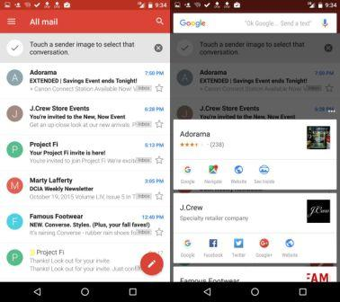
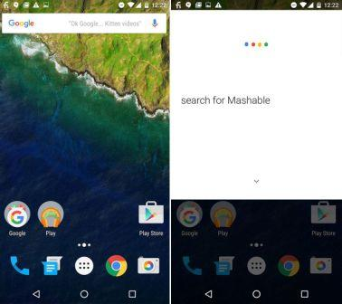
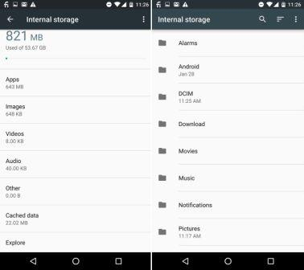
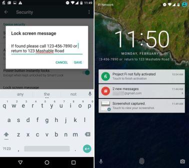
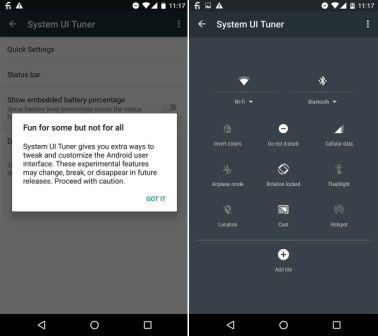
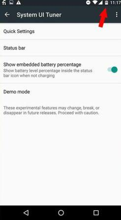
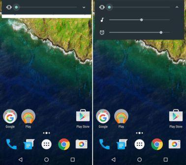

| Android is a Linux-based operating system for mobile devices such as smartphones and tablet computers. It is developed by the Open Handset Alliance led by Google. The Android Open Source Project (AOSP) is led by Google, and is tasked with the maintenance and development of Android. | |
| Enterprise / Developer: | |
| App Store: | Google Play Store |
| Number of applications: | ~ 2.000.000 |
| OS Kernel: | Linux |
| Version: | Android 6.0 Marshmallow |
| Version release date: | Tuesday, September 29, 2015 |
Instead of focusing on makeovers, this version focused on maintenance. Nevertheless, it had some excellent additions. Few of its features are:-
It's weird that the most important new feature in Marshmallow isn't one that's immediately visible. Google Now on Tap is essentially Google search in your apps. When you're within an app, you can press and hold the home button and Now on Tap will basically "scan" it for related information, which it will then display as cards.
Be warned, though. As we said in our Nexus 5X review, Now on Tap is a work in progress. Sometimes Now on Tap can be thorough and pick up on many keywords and sometimes it can fail to identify information.
It's easy to miss this one. In Marshmallow, the Google search bar is on every home screen, not just the main one. So long as your phone screen is active, you can say "OK Google..." and ask a question or search for anything.
There are hundreds of third-party file explorers — many of which are free like the popular ES File Explorer File Manager and File Manager — that you can use to view and organize your files.
Though the file explorer built into Marshmallow isn't quite as comprehensive as third-party ones (i.e. you can't rename files and you can't create new folders), it's basic enough (move, copy, share files) to show where all your files are. You can also search for files by name using the search bar, which is handy.
To access the file explorer go to Settings > Storage & USB and then scroll down to the bottom and tap "Explore."
Sure, you could display a mushy message or a famous quote, but it's more useful to have your contact information on your phone's lock screen in case you ever lose your phone.
By including a phone number to contact, email address, or physical address on the lock screen, there's a greater chance someone will be able to return it if they find it.
To add a custom message on your lock screen, go to Settings > Security > Lock Screen Message and then type in your message. It'll appear as scrolling text.
The System UI Tuner unlocks experimental features to tweak and customize the Android UI. Google warns that these features may "change, break, or disappear in future releases" and to proceed with caution.
To enable the System UI Tuner, you need to open the Quick Settings menu by swiping down from the status bar with two fingers. Then, tap and hold the Settings gear icon in the upper right for a few seconds and let go.
You'll be brought to the Settings app and a pop-up message will say "Congrats! System UI Tuner has been added to Settings."
Scroll down and tap System UI Tuner and you'll get access to making tweaks to the Quick Settings pane and Status bar. Tap on Quick Settings and you can remove and re-arrange shortcut icons to your liking. Tap on Status bar and you can turn on and off which icons show up in the status bar.
There are various ways to see the exact battery percentage on your Android phone. The easiest way in Marshmallow is to swipe down from the status bar using two fingers; you'll see the battery percentage in the Quick Settings pull-down.
But if you want the battery percentage to always show on the battery icon, go into the aforementioned System UI Tuner and toggle the "Show embedded battery percentage" on. Now you can see how much power is left with a glance — just like on iOS.
A lot of people weren't happy with how Google messed with the volume settings in Lollipop. In Marshmallow, Google fixed the screwy volume controls.
Now, when you press the volume up and down buttons on your phone, you get individual sliders for adjusting the volume of the notifications, music and timer. To access the additional sliders, just tap on on the down arrow.
